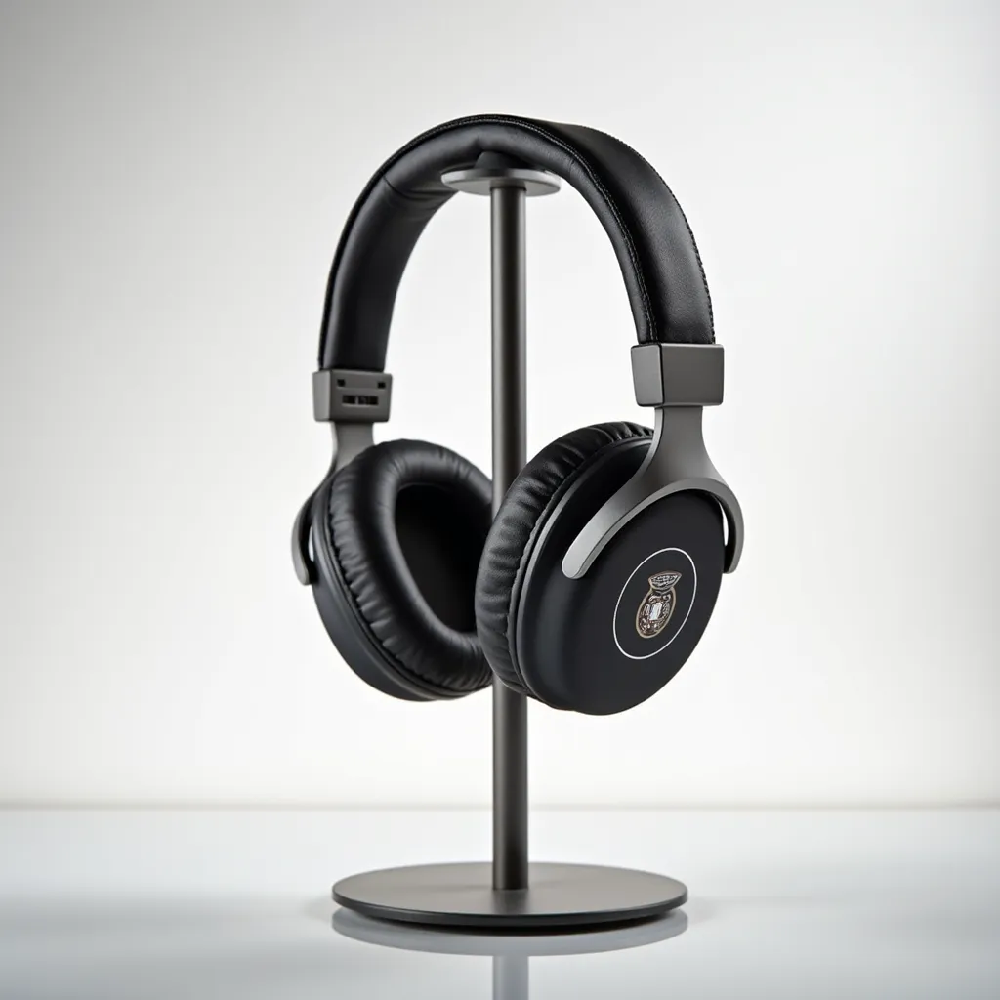

Prompt Catalyst Documentation
Your comprehensive guide to mastering AI prompt engineering
Getting Started
Installation and Setup
- Install Prompt Catalyst from the Chrome Web Store or Firefox Addons.
- Pin the extension to your toolbar (optional) and click the extension icon.

Understanding the Interface

Main Components:
- Header Buttons:
 Theme Switch: Change the visual appearance of the extension by selecting from a variety of themes.
Theme Switch: Change the visual appearance of the extension by selecting from a variety of themes. Video Mode Toggle: Switch between standard image prompt generation and video prompt generation mode.
Video Mode Toggle: Switch between standard image prompt generation and video prompt generation mode. Documentation: Access this help guide for detailed information on using Prompt Catalyst.
Documentation: Access this help guide for detailed information on using Prompt Catalyst. Website: Access to the full-screen, web version of Prompt Catalyst. Includes the same features as the extension and more!
Website: Access to the full-screen, web version of Prompt Catalyst. Includes the same features as the extension and more! Login/Logout: Access your Prompt Catalyst account (if you have a premium subscription) to unlock premium features. If you are already logged in, this icon will change to a user icon, allowing you to access your profile, and a logout icon to sign out of your account.
Login/Logout: Access your Prompt Catalyst account (if you have a premium subscription) to unlock premium features. If you are already logged in, this icon will change to a user icon, allowing you to access your profile, and a logout icon to sign out of your account.
 Upload Button: Click the upload icon to the left of the prompt input field to analyze an image and generate prompts based on it.
Upload Button: Click the upload icon to the left of the prompt input field to analyze an image and generate prompts based on it.- Prompt Input Field: Enter your base description here or use the upload button to analyze an image.
- Settings Panel: Customize prompt length, style, and purpose.
- Advanced Options: Access model-specific parameters and additional controls.
- Generation Controls: Generate and Random buttons.
Best Practices for First-Time Users
- Start with simple, clear descriptions
- Experiment with different styles before using advanced options
- Use the "Random" button to explore possibilities
- Save successful prompts to collections for future reference
Core Features Deep Dive
Style System

Artistic Styles:
- Free Styles: Photorealism, Pixel Art, Impressionism, Pop Art, Vintage, Hand-Drawn, Abstract
- Premium Styles: Cyberpunk, Baroque, Steampunk, Neo-noir, Vaporwave, Anime, And more...
Camera and Lighting Systems
Camera Angles:
- Basic Angles (Free): Wide, Close-up, Eye Level, Low, High, etc.
- Advanced Angles (Premium): Drone View, Orbital, Dolly Zoom, etc.

Lighting Options:
- Basic Lighting (Free): Natural, Studio, Dramatic, Backlight, etc.
- Advanced Lighting (Premium): Golden Hour, Volumetric, Bioluminescent, etc.

Credit System
Fueling Your Creativity

Prompt Catalyst uses a credit system to manage the usage of its features. Credits are required to generate prompts and previews. This section explains how the credit system works and how you can manage your credits.
Credit Allocation
- Unauthorized Users: Users who are not logged in can use Prompt Catalyst for free with a limited number of 3 credits. After reaching this limit, you will need to create an account to continue using the service.
- Free Users: Once registered, free users receive 25 credits daily. These credits refresh every day, allowing you to continue using Prompt Catalyst for free.
- Premium Users: Premium users receive 5000 credits. This provides a significantly larger allowance for generating prompts and using other features. Premium users can also opt to top-up their credits if needed.
Credit Usage
Different actions consume different amounts of credits:
- Prompt Generation: Generating a prompt costs 1 credit.
- Preview Generation: Generating a preview costs 2 credits.
- Flux Dev Generation (Website Only): Generating a prompt using the Flux Dev model on the website costs 10 credits.
- Flux Schnell Generation (Website Only): Generating a prompt using the Flux Schnell model on the website costs 5 credits.
Purposes
Optimizing Prompts for Specific Use Cases
The "Purpose" setting in Prompt Catalyst allows you to tailor your prompts to specific applications. By selecting a purpose, you guide the AI to generate prompts that are better suited for that particular use case.

Available Purposes
Prompt Catalyst offers a wide range of purposes, including:
- Stock Photo: Generate prompts for generic, commercially viable images.
- Product Photo: Create prompts focused on showcasing products.
- Portrait: Optimize prompts for creating portraits of people.
- Concept Art: Generate prompts for pre-production visual development.
- Illustration: Create prompts for artistic illustrations.
- Poster: Generate prompts for eye-catching poster designs.
- Book Cover: Optimize prompts for creating book cover art.
- Wallpaper: Generate prompts for visually appealing desktop or mobile wallpapers.
- Logo: Create prompts for simple, memorable brand symbols.
- 3D Render (Premium): Generate prompts for photorealistic 3D visualizations.
- Character Sheet (Premium): Create prompts for character reference sheets.
- Architectural Visualization (Premium): Create prompts for architectural designs.
- And many more!
How to Use Purposes
- Select the desired purpose from the "Purpose" dropdown menu in the main settings panel.
- The AI will use this information to fine-tune the generated prompts.
Examples
Here are some examples demonstrating how different settings, especially "Purpose," influence the generated prompts and resulting images:
| Description | Purpose | Style | Other Settings | Generated Prompt | Resulting Image |
|---|---|---|---|---|---|
| Headphones | Product Photo | Photorealism | Lighting: Studio | A pair of high-fidelity headphones hanging from a minimalistic stand against a soft white background. The headphones are showcased from a three-quarter angle, highlighting the logo and earcup design. Controlled studio lighting brings out the texture of the ear pads and metallic accents, while a slight reflection on the surface beneath the stand provides context for the product's scale. |  |
| A woman smiling | Portrait | Impressionism | Lighting: Golden Hour | Set against a backdrop of deep emerald hills, a woman radiates joy as she smiles brightly. The golden hour’s warm glow highlights the contours of her face, creating a flattering depth of field that gently blurs the distant landscape. Her vibrant green outfit mirrors the scenery, while impressionistic brushwork captures the essence of her lively expression and the serene ambiance of the natural setting. |  |
| Mage | Character Sheet | Fantasy | Creativity: 10 | A female mage character sheet featuring two clear views: front and back. The front view displays her in a flowing robe adorned with intricate runes, with her long hair cascading down her shoulders. The back view shows the robe's elaborate embroidery and a hood. Bright, even lighting illuminates all views, emphasizing her facial features and magical aura, with consistent proportions and a neat layout for easy reproduction. |  |
| Figurine Design | Cyberpunk | Lighting: Neon Lighting | A cyberpunk warrior figurine stands boldly on a hexagonal base. The pose is mid-action, with one arm extended forward and the other drawn back, showcasing intricate armor with a holographic texture. The figurine measures 8 inches tall, with proportions that emphasize a streamlined silhouette. The materials include a combination of polished resin for the body and matte black for the base, allowing for a striking contrast. Displayed at a 45-degree angle under vibrant blue and pink neon lights, the figure comes apart at the shoulders and waist for easy assembly. |  |
|
| Bakery "Crumb & Co." | Logo | Minimalism | Creativity: 7 | A minimalist logo design featuring a stylized loaf of bread with a bite taken out, incorporating the text "Crumb & Co." in a modern, sans-serif font underneath. The color palette is warm, with earthy browns and soft cream tones, ensuring clarity in both color and monochrome versions. The silhouette of the bread is sharp and simple, making it easily recognizable at any size. | |
| Village | Isometric Map | Fantasy | A bustling fantasy marketplace illustrated in an isometric format, with tiles sized at 5x5 units layered at various heights. Colorful stalls and tents rise 3 units above the ground, with low-angle views showcasing merchandise and animated characters. Shadows stretch across cobblestone paths, enhanced by low-key lighting that highlights details like fruit baskets and shimmering fabrics. Elevated platforms connect different market sections, inviting exploration with dynamic elevation changes. |  |
Tips for Using Purposes
- Choose the purpose that best matches your intended use of the generated image.
- Experiment with different purposes to see how they affect the generated prompts.
- Premium users have access to a wider range of specialized purposes.
Image to Prompt
Turn Images into Text Prompts

Prompt Catalyst's Image to Prompt feature allows you to upload an image and have our AI analyze it to generate descriptive text prompts. This is particularly useful when you have a visual concept in mind but are struggling to articulate it in words.
How It Works
- Click the "Upload" button in the main input area.
- Select an image file (JPEG, PNG, or WebP) from your computer.
- The AI will analyze the image and generate several text prompts that capture its visual elements and style.
- The generated prompts will appear in the "Generated Prompts" tab, ready to be copied, edited, or used as a starting point for further refinement.

Benefits
- Bridge the Gap: Translate visual ideas into text prompts effortlessly.
- Style Inspiration: Discover new artistic styles and prompt ideas based on existing images.
Tips for Best Results
- Use clear, high-quality images.
- Images with a distinct style or subject work best.
- Experiment with different image types to explore various prompt variations.
Creativity Value
Fine-Tune the AI's Imagination

The "Creativity" value slider lets you control how much artistic freedom the AI has when generating prompts. It's a scale from 0 to 10, where:
- 0 represents the least creative output, with the AI sticking very closely to your input description.
- 10 represents the most creative output, where the AI takes more liberties and introduces more imaginative or unexpected elements.
How to Use the Creativity Value
- Locate the "Creativity" slider in the "Advanced Options" section.
- Drag the slider to your desired level of creativity. The current value is displayed next to the slider.
When to Adjust Creativity
- Lower Values (0-3): Use when you want the AI to closely follow your input, with minimal deviation. This is useful for generating prompts that are very specific or when you have a precise vision in mind.
- Mid-Range Values (4-7): This is a good starting point for most prompts. The AI will balance adhering to your input with introducing some creative variations.
- Higher Values (8-10): Use when you want the AI to be more experimental and generate more unexpected or imaginative prompts. This can lead to surprising and inspiring results, but may deviate further from your initial input.
Tips for Using the Creativity Value
- Start with a mid-range value (around 5) and adjust as needed.
- Experiment with different values to see how they affect the generated prompts.
- Combine the "Creativity" value with other settings like "Style" and "Purpose" to achieve a wide range of results.
Midjourney Parameter Handling
Seamlessly Manage Your Midjourney Settings

Prompt Catalyst automatically manages and formats Midjourney parameters for you, ensuring compatibility and ease of use when using Midjourney as your selected AI model.
Automatic Parameter Detection and Formatting
- When you select "Midjourney" as your AI model, Prompt Catalyst will automatically detect and format any Midjourney parameters you add to your prompts.
- Parameters are visually separated within the prompt box for clarity.
- You can click on individual parameters to remove them from the prompt.
Manual Parameter Input
- You can manually add Midjourney parameters using the dedicated input fields in the "Midjourney Parameters" section.
- Use the buttons provided to quickly insert common parameters like `--v 6.1`, `--style raw`, or `--chaos`.
- You can set custom values for parameters like aspect ratio (`--ar`), stylize (`--s`), seed (`--seed`), and more.
Parameter Validation
- Prompt Catalyst will prevent you from adding duplicate parameters.
Parameter Preservation
- When you copy a prompt, the parameters are included in the copied text, ready to be pasted into Midjourney.
- When you save a prompt to a collection, the associated parameters are saved along with it.

Tips for Using Midjourney Parameters
- Use the "Model Version & Quality" buttons to quickly switch between Midjourney versions and quality settings.
- Experiment with different "Style & Aesthetics" parameters to fine-tune the look of your generated images.
- Use "Creative Controls" like `--chaos` and `--weird` to add a touch of unpredictability to your results.
- The "Aspect Ratio" and "Stylize Value" inputs allow for precise control over these settings.
- Use the "Reference Strength" (`--cw`) parameter to control how much your image prompt influences the style reference.
- Utilize the "Seed" parameter to reproduce specific generation results.
- The "Exclude Elements" (`--no`) parameter lets you specify elements you don't want to see in the generated image.
 Variations Button
Variations Button
Explore Similar Prompts with a Click
The "Variations" button lets you quickly generate alternative versions of a prompt. These variations maintain the core theme and elements of the original prompt but introduce subtle changes in style, composition, or details.
How to Use
- Generate or select a prompt you like.
- Click the "Variations" button in the prompt box.
- The AI will generate new prompts that are thematically related to the original, appearing in the "Generated Prompts" tab.
Benefits
- Idea Expansion: Discover new directions and possibilities based on your initial prompt.
- Creative Exploration: Quickly explore variations in style, lighting, or composition.
- Refinement: Iterate on a prompt to fine-tune the generated image.
Tips for Using Variations
- Use variations to refine a prompt that's close but not quite perfect.
- Combine elements from different variations to create a unique prompt.
- If you like a variation, save it to a collection for later use.
 Extend and Shorten
Extend and Shorten  Buttons
Buttons
Fine-Tune Prompt Length
Prompt Catalyst provides "Extend" and "Shorten" buttons to help you adjust the length and detail level of your prompts.
Extend Button
The "Extend" button allows you to add more detail and context to your existing prompts.
- How to Use:
- Click the "Extend" button in the prompt box.
- A popup will appear where you can specify the type of details you want to add (style, lighting, objects, or mood).
- The AI will generate extended versions of your prompt, incorporating the requested details.

- Benefits:
- Enrich your prompts with more specific visual elements.
- Increase the level of detail in generated images.
- Add nuance and complexity to your prompts.
Shorten Button
The "Shorten" button helps you create more concise versions of your prompts while retaining the core concept.
- How to Use:
- Click the "Shorten" button in the prompt box.
- The AI will generate shortened versions of your prompt, removing less essential details.
- Benefits:
- Create more focused and direct prompts.
- Reduce prompt complexity for faster generation.
- Experiment with different levels of detail.
Tips for Extending and Shortening
- Use "Extend" when you want to add more richness and complexity to your images.
- Use "Shorten" when your prompts are too long or convoluted.
- The "Extend" button is disabled for prompts longer than 800 characters.
- The "Shorten" button is disabled for prompts shorter than 170 characters.
 Preview Button
Preview Button
Get a Glimpse Before You Generate

The "Preview" button, represented by an eye icon, allows you to generate a small preview image based on your prompt *before* committing to a full generation. This helps you quickly assess the general direction of your prompt and make adjustments if needed.
How to Use
- Select a prompt you want to preview.
- Click the "Preview" button in the prompt box.
- A small preview image will be generated in 2-3 seconds and displayed within the prompt box.
Benefits
- Rapid Iteration: Quickly test and refine prompts before generating full-size images.
- Resource-Friendly: Previews use fewer resources than full generations.
- Visual Feedback: Get a visual sense of your prompt's direction.
Tips for Using Previews
- Use previews to experiment with different prompt variations.
- Note that previews are low-resolution and may not fully represent the final image quality.
- Free users have a limited number of previews per day. Premium users have a higher limit.
Video Mode Features
Create Dynamic Video Prompts

Prompt Catalyst's Video Mode allows you to generate prompts tailored for AI video generation tools. This mode focuses on elements critical to video creation, such as scene descriptions, camera movements, video style, and timing.
Video Prompt Components
| Component | Description | Examples |
|---|---|---|
| Scene Description | Core narrative and visual elements of the video scene. | "A flower blooming in a garden" |
| Camera Movement | Describes how the camera moves or pans through the scene. | Static, Pan, Tracking Shot, Dolly, Crane Shot |
| Video Style | Defines the overall aesthetic and style of the video. | Cinematic, Documentary, Music Video, Animation |
| Lighting | Specifies the lighting conditions of the video scene. | Natural, Studio, Dramatic, Backlight, Golden Hour (Premium) |
| Camera Angle | Indicates the angle or perspective from which the scene is shot. | Wide Angle, Close Up, Eye Level, Low Angle, High Angle |
Video Prompt Best Practices
- Scene Flow: Clearly describe the sequence of actions or events in the scene.
- Transitions: Specify how scenes connect or transition (e.g., cut, fade, dissolve).
- Lighting and Mood: Set the tone with appropriate lighting descriptions.
Premium Video Features
- Advanced Movements: Access specialized camera movements like Orbital, Drone Fly, Steadicam, and Vertical.
- Special Effects: Utilize effects like Slow Motion and Time Lapse for creative impact.
- Style Variety: Choose from a wider range of video styles, including Aerial, Experimental, and more.
Advanced Prompt Engineering
Key Principles
- Clarity: Use precise, unambiguous language
- Structure: Organize elements in priority order
- Detail Balance: Include essential details without overloading
- Technical Terms: Use industry-standard terminology
History Tab
Your Prompting Journey at a Glance
The "History" tab is your personal archive of generated prompts. It automatically saves your prompting activity, allowing you to revisit, reuse, and refine your past creations.

What's Saved in History
The History tab stores the following information for each prompt you generate:
- Type: Whether it was a standard prompt, a variation, a video prompt, or an image analysis result.
- Description: The base description you entered.
- Prompt Length: The selected length (Short, Medium, Long, or Random).
- Style: The selected style.
- Purpose: The selected purpose.
- Creativity: The chosen creativity value.
- Lighting: The selected lighting.
- Camera Angle: The selected camera angle.
- AI Model: The selected AI model.
- Prompts: The generated prompt(s).
Key Features
- Automatic Saving: Your prompts are automatically saved to the history - no manual action required.
- Searchable: Use the search bar to quickly find specific prompts based on keywords, descriptions, or settings. (See the History Search section for more details).
- Organized View: Prompts are displayed in a clear, chronological list with all relevant details.
- Actions: You can copy, generate variations, extend, shorten, or add prompts from your history to collections using the buttons in each prompt box.
- Premium History Limit:
- Free Users: The history tab stores the last 5 generated prompts.
- Premium Users: The history tab stores all generated prompts.
Tips for Using the History Tab
- Use the search bar to quickly find prompts based on keywords or settings.
- Revisit your history to get inspiration or to refine previous ideas.
- Copy prompts from your history to use them again or as a starting point for new variations.
- Add prompts from your history to collections to keep them organized for the long term.
- If you frequently generate a large number of prompts, consider upgrading to Premium for a larger history capacity.
 History Search
History Search
Find Your Past Prompts
The History tab includes a search bar that allows you to quickly find prompts you've generated in the past. You can search by keywords, descriptions, model, style, or any other detail you remember from your previous prompts.
How to Use
- Go to the "History" tab.
- Enter your search term in the search bar.
- The history list will update in real-time to display matching prompts.
Tips for Searching
- Use specific keywords related to the prompt's content or style.
- Combine multiple keywords to narrow down your search.
- Clear the search bar to view the full history again.
Collections Tab
Organize and Manage Your Prompts

The "Collections" tab allows you to create, organize, and manage collections of your prompts. This is a powerful tool for keeping your prompts organized by project, theme, style, or any other criteria you choose.
Key Features
- Create Collections: Easily create new collections with custom names.
- Add Prompts: Add prompts to collections using the "Quick Add" button or from within the Collections tab.
- Manage Collections: Rename, delete, and reorder collections as needed.
- Move Prompts: Move prompts between collections using a simple interface.
- Color Coding Assign colors to your collections for visual organization.
- Export Collections Export your collections as text files for backup or sharing.
How to Use Collections
- Go to the "Collections" tab.
- Click the "New Collection" button to create a new collection.
- Give your collection a name and click "Create".
- To add prompts to a collection, use the "Quick Add" button on any prompt or drag and drop prompts from the "Generated Prompts" or "History" tabs into the collection.
- To manage your collections, use the icons next to each collection's name in the Collections tab.
Tips for Using Collections
- Create collections for different projects, themes, or styles.
- Use descriptive collection names to easily identify their contents.
- Regularly review and clean up your collections to keep them organized.
 Quick Add to Collections
Quick Add to Collections
Save Prompts with a Single Click

The "Quick Add" button, represented by a star icon, provides a fast and convenient way to save prompts to your collections.
How to Use
- Generate or select a prompt you want to save.
- Click the "Quick Add" button in the prompt box.
- A dropdown menu will appear, allowing you to select an existing collection or create a new one.
- The prompt will be added to the chosen collection.
Benefits
- Streamlined Organization: Quickly save prompts to relevant collections without interrupting your workflow.
- One-Click Saving: Add prompts to collections with a single click.
- Easy Collection Management: Create new collections on the fly while saving prompts.
Tips for Using Quick Add
- Use the star icon color to quickly identify if a prompt is already in a collection (filled star) or not (empty star).
- Create new collections directly from the Quick Add menu to stay organized.
- If you accidentally add a prompt to the wrong collection, you can move it using the "Move" button in the Collections tab.
Style References Tab
Explore and Utilize Midjourney Style Codes

The "Style Codes" tab provides a comprehensive library of style reference codes specifically for use with Midjourney. These codes allow you to quickly apply a wide range of artistic styles to your generated images.
Features
- Visual Style Gallery: Browse through a curated collection of visual styles, each represented by a sample image and its corresponding Midjourney style code.
- Copy Code: Easily copy the style code to your clipboard with a single click.
- Fullscreen View: Expand the style reference library to a full-screen view for better browsing and selection.
- Premium Styles: Premium users get access to an expanded library of over 100 exclusive style codes.
How to Use Style Codes
- Go to the "Style Codes" tab.
- Browse the available styles and find one you like.
- Click the "Copy" button next to the style code.
- Paste the copied code into your prompt in Midjourney, usually at the end of the prompt, to apply the style to your generated image.
Tips for Using Style Codes
- Experiment with combining multiple style codes to create unique effects.
- Refer to the Midjourney documentation for more advanced usage of style references.
Weekly Prompts Tab
Get Inspired with Fresh Prompts Every Week

The "Prompts of the Week" tab provides a curated selection of unique and inspiring prompts. These prompts are hand-picked by our team and updated weekly, ensuring a constant flow of fresh ideas.
Features
- Curated Selection: Discover high-quality prompts chosen for their creative potential.
- Weekly Updates: New prompts are added every week to keep things fresh.
- Image Previews: Each prompt is accompanied by a sample image to illustrate the concept.
- Copy & Use: Easily copy the prompts and use them in your favorite AI image generator.
- Variations & Customization: Generate variations, extend, or shorten the weekly prompts to make them your own.
How to Use the Weekly Prompts Tab
- Click on the "Prompts of the Week" tab (calendar icon).
- Browse through the available prompts.
- Click the "Copy" button to copy a prompt to your clipboard.
- Use the "Variations," "Extend," and "Shorten" buttons to modify the prompts.
- Click the "Add to Collection" button to save a prompt to one of your collections.
Tips for Using Weekly Prompts
- Check the tab regularly for new inspiration.
- Use the weekly prompts as a starting point and customize them to fit your specific needs.
- Combine elements from different weekly prompts to create unique combinations.
Theme Customization

Some Available Themes
| Theme | Description | Special Features |
|---|---|---|
| Default | Professional dark interface | High contrast, eye-friendly |
| Christmas Joy | Festive theme with animations | Snowfall effect, holiday colors |
| Neon Synth | Cyberpunk-inspired design | Neon accents, grid patterns |
| Custom Background | Personalized theme | Upload custom images |
Custom backgrounds (currently not working in Firefox)
Personalize Your Workspace

Prompt Catalyst allows you to set a custom background image for the extension, giving you a more personalized and visually appealing workspace.
How to Set a Custom Background
- Click the "Theme" button in the extension's header.
- In the theme panel, click the "Custom Background" button.
- You will be redirected to a page where you can upload an image from your computer.
- Select the image you want to use as your background.
- The custom background will be applied automatically and saved for future sessions.
Tips for Choosing a Background Image
- Use high-resolution images for the best visual quality.
- Choose images that are not too distracting or busy.
- Consider images with darker colors or gradients for better contrast with the extension's interface.
- You can change your custom background at any time.
Support Resources
Providing Feedback
- Feature Requests: Submit ideas for new features
- Bug Reports: Help us improve by reporting issues
- User Experience: Share your workflow suggestions
- Style Suggestions: Recommend new style presets